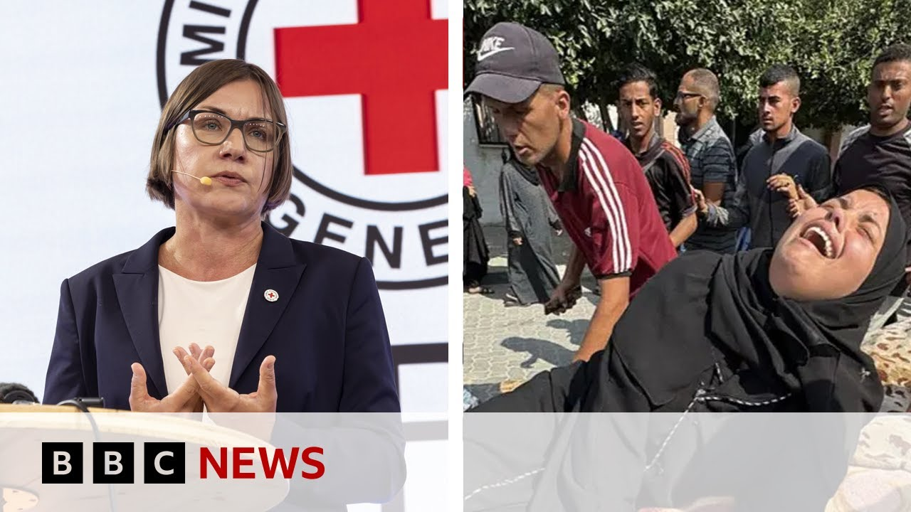

【加沙比人间地狱更糟 | BBC新闻】
Summary: The International Red Cross chief describes Gaza as worse than hell, with recent Israeli airstrikes killing 12 and injuring many at a school sheltering displaced families, as aid distribution halts amid calls for independent investigations.
摘要： 国际红十字会主席称加沙比地狱更糟，以色列空袭造成12人死亡，多人受伤，袭击目标是一所收容流离失所家庭的学校，援助分发暂停，要求进行独立调查的呼声高涨。

⏱️ Estimated Reading Time: 11 min
📚 高考3500生词 📚 雅思生词 📚 托福生词 📚 GRE生词
President of the International Committee of the Red Cross has said that Gaza has become worse than hell on earth.
国际红十字会主席表示，加沙已变得比人间地狱更糟。
Mijana Spol Yaric was speaking to the BBC just earlier today and the comments come as at least 12 Palestinians have been killed.
米贾娜·斯波尔·亚里奇今天早些时候向BBC发表讲话，与此同时至少有12名巴勒斯坦人丧生。
Several others have been injured in an Israeli air strike targeting a school in Hong Ununice.
另有多人在以色列针对洪乌努尼斯一所学校的空袭中受伤。
That's according to medics and eyewitnesses.
这是根据医护人员和目击者的说法。
Eyewitnesses have been reporting that an Israeli drone struck two tents which were housing dozens of displaced people, including women and children.
目击者报告称，以色列无人机袭击了两个帐篷，里面住着数十名流离失所者，包括妇女和儿童。
Well, Gaza's Hamas run civil defense agency said that rescue workers had recovered the bodies of two children.
加沙哈马斯管理的民防机构表示，救援人员已找到两名儿童的遗体。
Well, we're continuously monitoring the live scene in Han Ununice and this is the latest attack, the latest Israeli attack, which comes as aid distribution centers across Gaza are closed today as calls grow for independent investigations into the killings of dozens of people in incidents near the sites.
我们正在持续关注汉乌努尼斯的现场情况，这是最新的袭击，最新的以色列袭击，与此同时加沙各地的援助分发中心今天关闭，要求对现场附近数十人死亡的独立调查的呼声越来越高。
The Gaza Humanitarian Foundation, which is a controversial aid network backed by the US and Israel, which began operating last week, says it was closing its sites for update organization and efficiency improvement works.
加沙人道主义基金会是一个由美国和以色列支持的有争议的援助网络，上周开始运作，表示将关闭其站点以进行组织更新和效率提升工作。
Well, our Middle East correspondent Barbara Plata is following developments from Jerusalem.
我们的中东记者芭芭拉·普拉塔正在耶路撒冷跟踪事态发展。
I asked her just what we knew about the strike on the school in this was a school.
我问她对这次学校袭击的了解，这是一所学校。
This is a school in Kanunis and um the Israelis issued evacuation orders for parts of Kanunis quite recently.
这是卡努尼斯的一所学校，以色列最近对卡努尼斯部分地区发布了疏散命令。
Uh they told civilians that they would be stepping up their offensive there against Hamas and so uh we understand that that hundreds of people arrived at this particular school since then because of those evacuation orders.
他们告诉平民将加强对哈马斯的进攻，因此我们了解到，由于这些疏散命令，数百人抵达了这所学校。
So they put up tents in the grounds of the school and what we're understanding from eyewitnesses as well as the civil defense agency uh is that Israeli drones struck uh hitting two of the tents that belonged to one family.
他们在学校场地搭起了帐篷，我们从目击者和民防机构了解到，以色列无人机袭击了属于一个家庭的两个帐篷。
Uh and we have those um casualty figures right now of 12 dead and a number of people injured.
目前我们有12人死亡和多人受伤的伤亡数字。
You know, of course, Kasha, that uh the schools across Gaza mostly are not operating now and are very very widely used as places for displaced people to take refuge and also that the Israelis quite often hit the schools saying that they are being used as command and control centers by Hamas.
当然，卡莎，加沙各地的学校大多现在没有运作，被广泛用作流离失所者的避难所，以色列也经常袭击学校，称它们被哈马斯用作指挥和控制中心。
Um we have not had any response yet from the Israelis about this incident, but usually the result of any strikes are that many civilians are the ones who suffer.
我们尚未收到以色列对此事件的回应，但通常任何袭击的结果都是许多平民受害。
Barbara Platasha in Jerusalem.
芭芭拉·普拉塔莎在耶路撒冷报道。
Well, also earlier I spoke to Awa Deman who she's the founder of the International Network for Aid Relief and Assistance in Ara.
早些时候我还与阿瓦·德曼交谈，她是国际援助救济与协助网络的创始人。
It's one of the groups on the ground in Gaza.
这是在加沙实地工作的组织之一。
I began by asking her what she made of the International Committee of the Red Cross's comments that Gaza has become worse than hell on earth.
我首先问她如何看待国际红十字会关于加沙变得比人间地狱更糟的评论。
I've been to Gaza myself four times since October 7th and then Israel actually denied me entry uh earlier this year with no reason given.
自10月7日以来，我自己去过加沙四次，今年早些时候以色列无故拒绝我入境。
And when you speak to Inata's team members, when you speak to anyone actually on the ground in Gaza, you know, for them it's it's eclipsed hell on earth.
当你与Inata的团队成员交谈，与加沙的任何实地人员交谈时，对他们来说，这已经超越了人间地狱。
This is an entirely new realm of such complete and utter deliberately caused human suffering that it's extraordinarily difficult even for those who are living through it to actually wrap their minds around it and understand how it is that even they themselves are getting through every single day.
这是一个全新的领域，完全和彻底故意造成的人类苦难，即使是那些正在经历的人也难以理解他们是如何度过每一天的。
Add to the sheer struggle of survival.
再加上纯粹的生存斗争。
Everybody is hungry, tired, thirsty, super low energy levels.
每个人都饥饿、疲惫、口渴，能量水平极低。
And so you have to imagine, you know, and and frankly, it it's quite, you know, surprising to a certain degree to hear, you know, the the Gaza Humanitarian Foundation say that they were surprised at the number of people who showed up to their distribution sites because what were they expecting?
因此你必须想象，坦率地说，听到加沙人道主义基金会说他们对出现在分发点的人数感到惊讶，这在一定程度上令人惊讶，因为他们期待什么？
Were they really expecting, and this is exactly why they came under such heavy criticism, that they would be able to feed and provide for more than 2.2 2 million starving people with just four hubs.
他们真的期待仅用四个中心就能为超过220万饥饿的人提供食物和物资吗？这正是他们受到严厉批评的原因。
People who would have to walk hours through extraordinarily dangerous militarized zones.
人们必须步行数小时穿过极其危险的军事化区域。
Look, there's already an infrastructure in place in Gaza run by the United Nations and other organizations with over 400 distribution points.
看，加沙已经有由联合国和其他组织运营的基础设施，有超过400个分发点。
The capacity is there.
能力是存在的。
All humanitarian organizations need is to have their trucks be let in and to be permitted to actually do their job.
所有人道主义组织需要的是让他们的卡车进入并被允许实际开展工作。
But we continuously hear Israel refusing to let ENRA do that.
但我们不断听到以色列拒绝让近东救济工程处这样做。
And we appreciate what you're saying that it's got it's got the abilities and we we speak to UNRA regularly.
我们感谢你所说的，它有这个能力，我们定期与近东救济工程处交谈。
They say they've got the facilities, they've got the infrastructure, they've got the local knowledge to do it.
他们说他们有设施，有基础设施，有当地知识来做这件事。
But when you've got Israel insisting that UNRA has sympathies or even u people who are members of Hamas working for them, something that under ANRA strongly strongly disputes.
但当以色列坚持认为近东救济工程处有同情心，甚至为哈马斯成员工作，这是近东救济工程处强烈强烈争议的。
How do you get around that then?
那么你如何解决这个问题？
Well, I quite frankly would argue back that you know what, fine.
坦率地说，我会反驳说，好吧。
You want to use that allegation towards UNRWA and stop them from doing their job.
你想用这个指控针对近东救济工程处，阻止他们工作。
What about the World Food Program?
世界粮食计划署呢？
What about the World Central Kitchen that has the capacity to feed hundreds of thousands of people a day and yet it too is not being permitted to bring in its supplies?
世界中央厨房有能力每天为数十万人提供食物，但它也不被允许运入物资？
Look, a lot of what Israel tries to argue to justify its actions quite simply when you know what's really happening on the ground just doesn't make sense.
看，以色列试图为其行为辩护的很多说法，当你了解实地真正发生的事情时，根本说不通。
Even if we take, you know, these these horrific, you know, mass casualty incidents that have happened as people were on route to these distribution points, you know, Israel is the one that dictates the route that people have to take.
即使我们以这些可怕的、大规模伤亡事件为例，这些事件发生在人们前往分发点的途中，是以色列规定了人们必须走的路线。
And Israel knows that that route takes people through a danger zone.
以色列知道那条路线会带人们穿过危险区域。
And actually, I have an eyewitness account from a young man who who was there over the weekend during one of these mass casualty events.
实际上，我有一个年轻男子的目击证词，他在周末的一次大规模伤亡事件中在场。
And he's describing how the the crowd of people moved forward after they got the okay to move forward.
他描述了人群在得到前进许可后如何前进。
Then the gunshots ring out.
然后枪声响起。
Then he and his friends end up running towards the beach thinking that they might be safer.
然后他和他的朋友们最终跑向海滩，认为那里可能更安全。
But while they're running down the beach, a gunship begins firing at them.
但当他们沿着海滩跑时，一艘炮舰开始向他们开火。
And he specifically describes how four people died in front of him and how he saw a little 5-year-old girl being shot in the stomach.
他具体描述了四个人在他面前死去，以及他看到一个5岁小女孩被击中腹部。
And quite frankly, having been on the ground myself, being constantly in touch with people there, knowing the reality of what's happening, it's very frustrating that for some reason, you know, so many world superpowers, so many individuals are refusing to believe what it is that the Palestinians in Gaza who are living through this are telling them.
坦率地说，我自己去过实地，不断与那里的人联系，了解正在发生的现实，令人非常沮丧的是，出于某种原因，这么多世界大国，这么多个人拒绝相信加沙正在经历这一切的巴勒斯坦人告诉他们的事情。
And it really begs the question of if we had actually listened to them, if we had actually believed them when they said we're being killed, we're being starved.
这真的让人质疑，如果我们真的听了他们的话，如果我们真的相信他们所说的我们正在被杀害，我们正在挨饿。
This is a war that is being carried out on us and not Hamas.
这是一场针对我们而不是哈马斯的战争。
Would we actually be where we are today?
我们今天会处于这个境地吗？